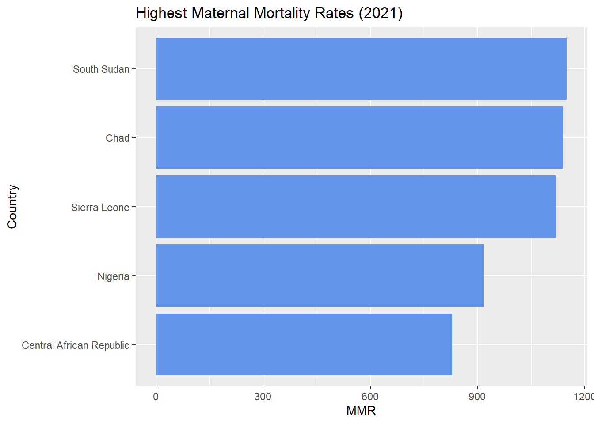
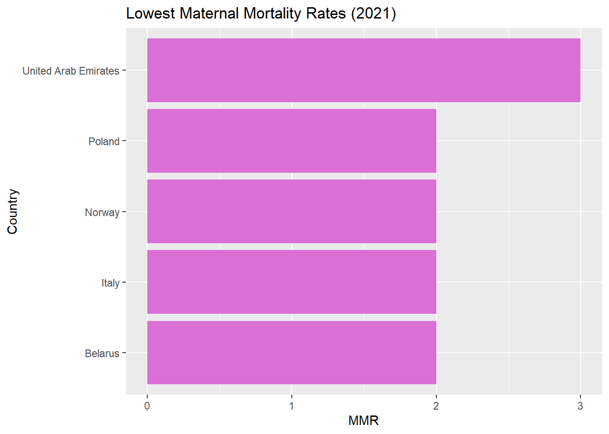
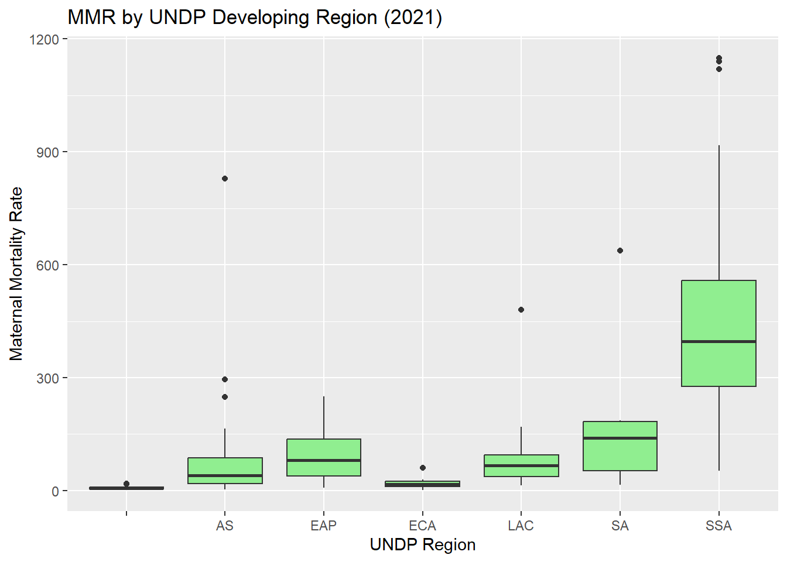
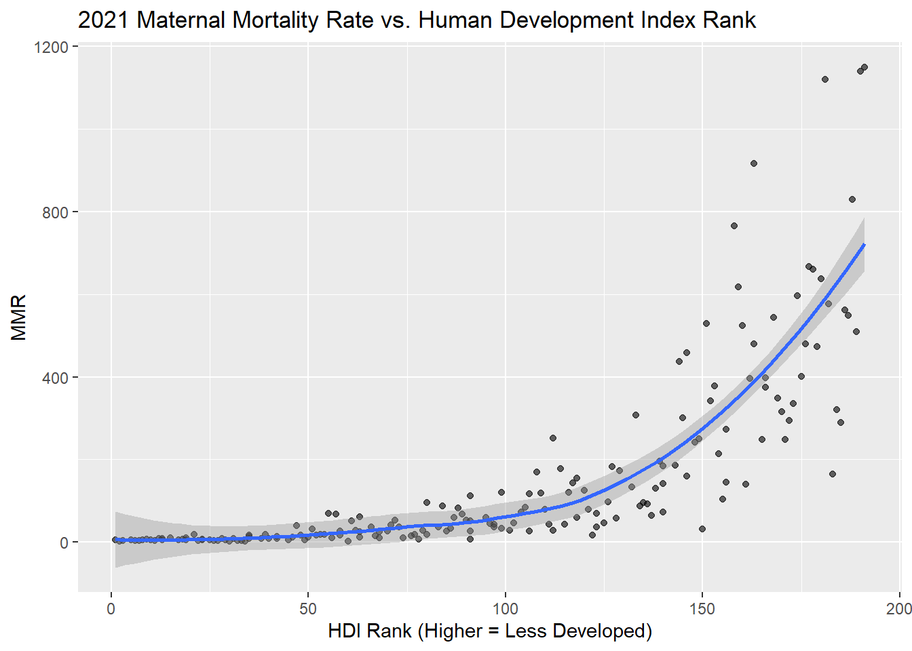
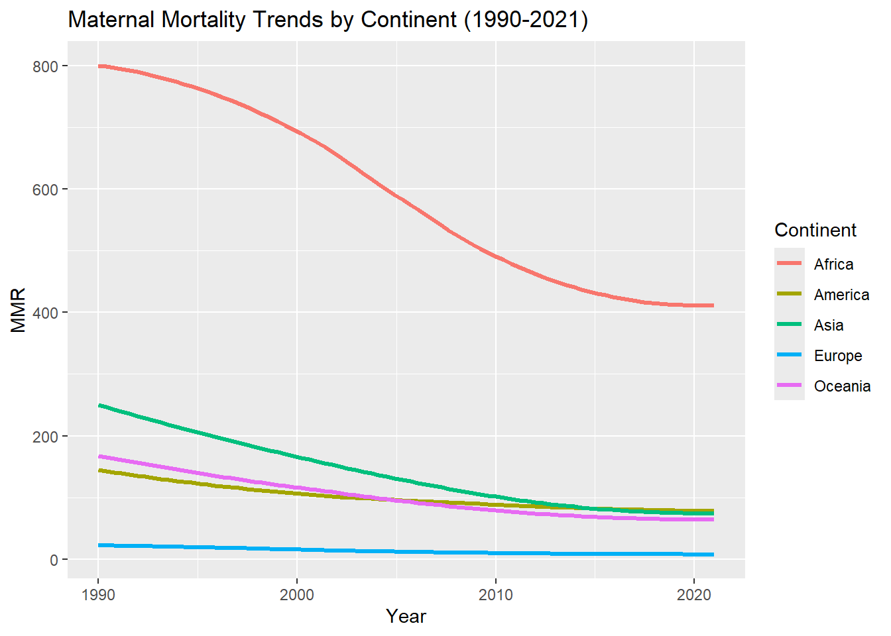
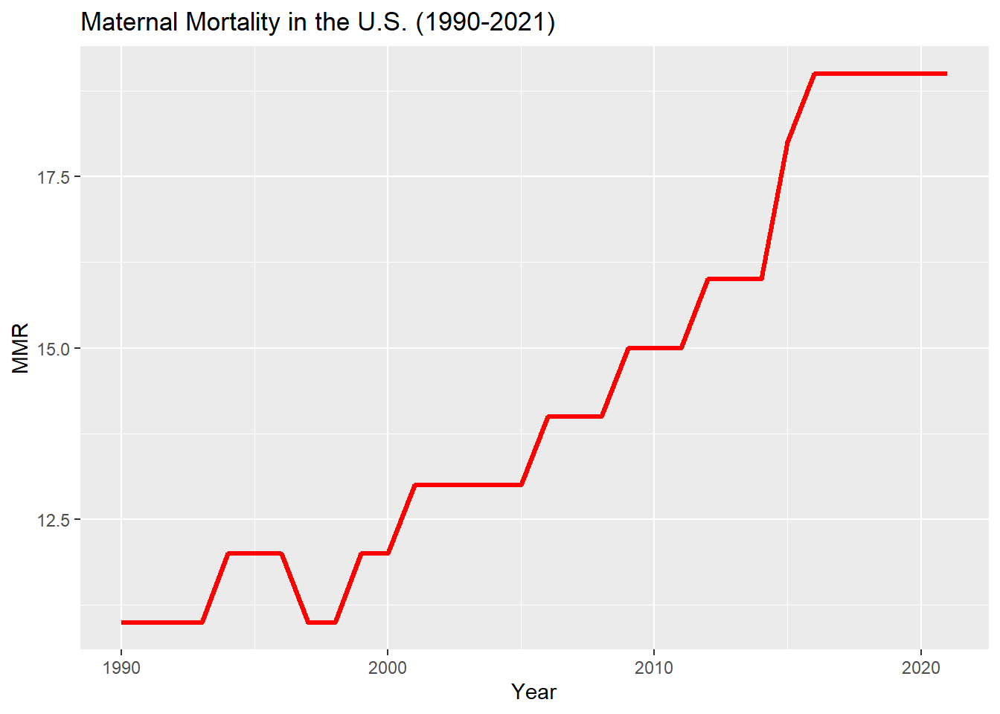
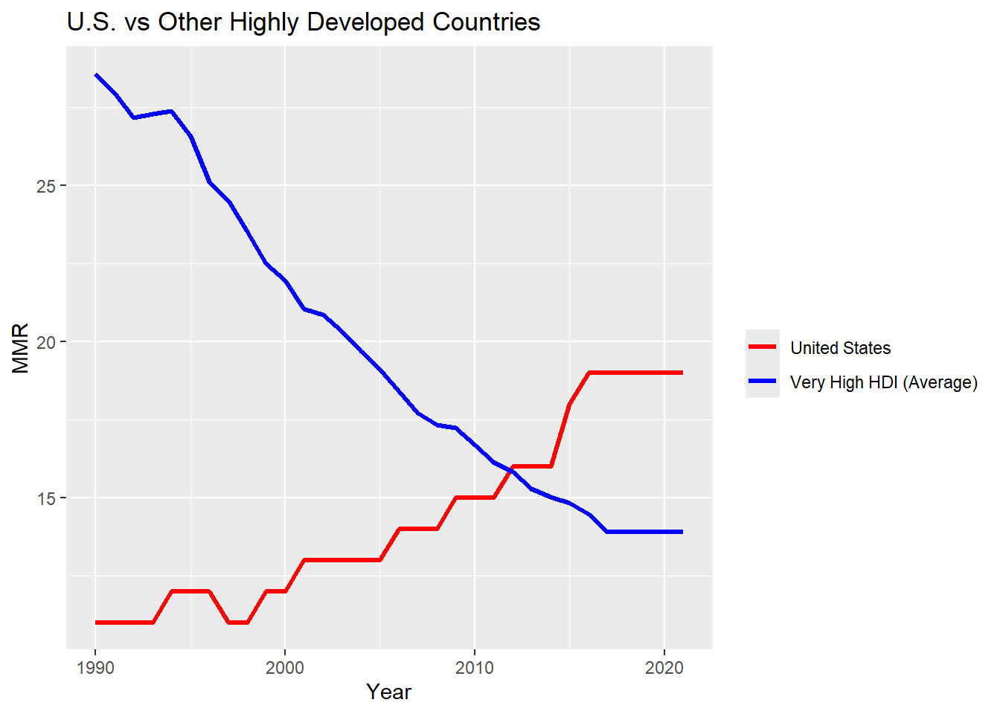

# For data manipulation and tidying
library(dplyr)
library(stringr)
library(tidyr)
# For data visualizations
library(ggplot2)Analyzing Global Trends in Maternal Mortality
Background
According to the World Health Organization, maternal mortality refers to deaths due to complications during pregnancy and childbirth. Maternal mortality rate (the number of maternal deaths per 100,000 live births) is a critical indicator of the strength of a country’s healthcare system. High maternal mortality rates are often due to disparities in access to quality healthcare, particularly in low- and middle-income countries. Reducing maternal mortality is essential for improving women’s health. It’s critical to understand trends in maternal mortality data globally to identify disparities, understand trends, and inform future public health research and policy.
Research Questions
To guide my analysis, I developed research questions aimed at understanding the trends and factors behind maternal mortality rates across different countries and years.
Question 1: In 2021, which countries had the highest and lowest maternal mortality rates?
Question 2: In 2021, which UNDP Developing Regions had the highest maternal mortality rates?
Question 3: In 2021, was there a relationship between a country’s Human Development Index rating and its maternal mortality ratio?
Question 4: How do maternal mortality rates vary across continents, and how have these variations changed over time?
Question 5: How do maternal mortality rates vary across Human Development Groups, and how have these variations changed over time?
Question 6: How has the maternal mortality rate in the United States changed across time?
Question 7: How does the maternal mortality rate over time in the United States compare to that of other highly developed countries?
Question 7: What was the global maternal mortality rate in 2021? How has this rate changed since 1990?
Let’s get started!
Loading Necessary Packages
Importing Data
The data for this project was downloaded from Kaggle. This project contains one data set which was imported and inspected using the read.csv() function.
# loading in csv
maternalmortality <- read.csv(file = "mmrdata.csv",
header = TRUE,
stringsAsFactors = FALSE)Data Structure and Variables
Let’s take a look at the dataset.
# looking at data
glimpse(maternalmortality)Rows: 195
Columns: 39
$ ISO3 <chr> "AFG"…
$ Country <chr> "Afgh…
$ Continent <chr> "Asia…
$ Hemisphere <chr> "Nort…
$ Human.Development.Groups <chr> "Low"…
$ UNDP.Developeing.Regions <chr> "SA",…
$ HDI.Rank..2021. <int> 180, …
$ Maternal.Mortality.Ratio..deaths.per.100.000.live.births...1990. <int> 1500,…
$ Maternal.Mortality.Ratio..deaths.per.100.000.live.births...1991. <int> 1530,…
$ Maternal.Mortality.Ratio..deaths.per.100.000.live.births...1992. <int> 1520,…
$ Maternal.Mortality.Ratio..deaths.per.100.000.live.births...1993. <int> 1480,…
$ Maternal.Mortality.Ratio..deaths.per.100.000.live.births...1994. <int> 1540,…
$ Maternal.Mortality.Ratio..deaths.per.100.000.live.births...1995. <int> 1490,…
$ Maternal.Mortality.Ratio..deaths.per.100.000.live.births...1996. <int> 1440,…
$ Maternal.Mortality.Ratio..deaths.per.100.000.live.births...1997. <int> 1470,…
$ Maternal.Mortality.Ratio..deaths.per.100.000.live.births...1998. <int> 1410,…
$ Maternal.Mortality.Ratio..deaths.per.100.000.live.births...1999. <int> 1470,…
$ Maternal.Mortality.Ratio..deaths.per.100.000.live.births...2000. <int> 1450,…
$ Maternal.Mortality.Ratio..deaths.per.100.000.live.births...2001. <int> 1390,…
$ Maternal.Mortality.Ratio..deaths.per.100.000.live.births...2002. <int> 1300,…
$ Maternal.Mortality.Ratio..deaths.per.100.000.live.births...2003. <int> 1240,…
$ Maternal.Mortality.Ratio..deaths.per.100.000.live.births...2004. <int> 1180,…
$ Maternal.Mortality.Ratio..deaths.per.100.000.live.births...2005. <int> 1140,…
$ Maternal.Mortality.Ratio..deaths.per.100.000.live.births...2006. <int> 1120,…
$ Maternal.Mortality.Ratio..deaths.per.100.000.live.births...2007. <int> 1090,…
$ Maternal.Mortality.Ratio..deaths.per.100.000.live.births...2008. <int> 1030,…
$ Maternal.Mortality.Ratio..deaths.per.100.000.live.births...2009. <int> 993, …
$ Maternal.Mortality.Ratio..deaths.per.100.000.live.births...2010. <int> 954, …
$ Maternal.Mortality.Ratio..deaths.per.100.000.live.births...2011. <int> 905, …
$ Maternal.Mortality.Ratio..deaths.per.100.000.live.births...2012. <int> 858, …
$ Maternal.Mortality.Ratio..deaths.per.100.000.live.births...2013. <int> 810, …
$ Maternal.Mortality.Ratio..deaths.per.100.000.live.births...2014. <int> 786, …
$ Maternal.Mortality.Ratio..deaths.per.100.000.live.births...2015. <int> 701, …
$ Maternal.Mortality.Ratio..deaths.per.100.000.live.births...2016. <int> 673, …
$ Maternal.Mortality.Ratio..deaths.per.100.000.live.births...2017. <int> 638, …
$ Maternal.Mortality.Ratio..deaths.per.100.000.live.births...2018. <int> 638, …
$ Maternal.Mortality.Ratio..deaths.per.100.000.live.births...2019. <int> 638, …
$ Maternal.Mortality.Ratio..deaths.per.100.000.live.births...2020. <int> 638, …
$ Maternal.Mortality.Ratio..deaths.per.100.000.live.births...2021. <int> 638, …The maternalmortality dataframe contains 39 variables (columns) and 195 observations (rows), where each row corresponds to a country.
The 39 variables are:
‘ISO3’: The three-letter country code from ISO 3166, the international standard for country codes.
Country: The name of the Country/Territory.Continent: The Continent where the Country/Territory is located.Hemisphere: The Hemisphere (Northern or Southern) where the Country/Territory is located.Human.Development.Groups: The Human Development Index (HDI) is a measure compiled by the United Nations Development Programme to assess a country’s average achievements in health, education, and standard of living. In this dataset, countries are categorized into four tiers based on their HDI: Very High, High, Medium, and Low.UNDP.Developing.Regions: The classification of countries into developing regions by the United Nations Development Programme (UNDP). These regions include East Asia and Pacific (EAP), Europe and Central Asia (ECA), Latin America and the Caribbean (LAC), Middle East and North Africa (MNA), South Asia (SAS), and Sub-Saharan Africa (SSA).HDI.Rank..2021: The ranking of countries based on their Human Development Index (HDI) values, with 1 being the highest-ranked country. This rank reflects a country’s relative position in terms of human development compared to others.Maternal.Mortality.Ratio..deaths.per.100.000.live.births...1990: The maternal mortality ratio (MMR) in 1990, measured as the number of maternal deaths per 100,000 live births.Maternal.Mortality.Ratio..deaths.per.100.000.live.births...1991: The maternal mortality ratio (MMR) in 1991, measured as the number of maternal deaths per 100,000 live births.Maternal.Mortality.Ratio..deaths.per.100.000.live.births...1992: The maternal mortality ratio (MMR) in 1992, measured as the number of maternal deaths per 100,000 live births.Maternal.Mortality.Ratio..deaths.per.100.000.live.births...1993: The maternal mortality ratio (MMR) in 1993, measured as the number of maternal deaths per 100,000 live births.Maternal.Mortality.Ratio..deaths.per.100.000.live.births...1994: The maternal mortality ratio (MMR) in 1994, measured as the number of maternal deaths per 100,000 live births.Maternal.Mortality.Ratio..deaths.per.100.000.live.births...1995: The maternal mortality ratio (MMR) in 1995, measured as the number of maternal deaths per 100,000 live births.Maternal.Mortality.Ratio..deaths.per.100.000.live.births...1996: The maternal mortality ratio (MMR) in 1996, measured as the number of maternal deaths per 100,000 live births.Maternal.Mortality.Ratio..deaths.per.100.000.live.births...1997: The maternal mortality ratio (MMR) in 1997, measured as the number of maternal deaths per 100,000 live births.Maternal.Mortality.Ratio..deaths.per.100.000.live.births...1998: The maternal mortality ratio (MMR) in 1998, measured as the number of maternal deaths per 100,000 live births.Maternal.Mortality.Ratio..deaths.per.100.000.live.births...1999: The maternal mortality ratio (MMR) in 1999, measured as the number of maternal deaths per 100,000 live births.Maternal.Mortality.Ratio..deaths.per.100.000.live.births...2000: The maternal mortality ratio (MMR) in 2000, measured as the number of maternal deaths per 100,000 live births.Maternal.Mortality.Ratio..deaths.per.100.000.live.births...2001: The maternal mortality ratio (MMR) in 2001, measured as the number of maternal deaths per 100,000 live births.Maternal.Mortality.Ratio..deaths.per.100.000.live.births...2002: The maternal mortality ratio (MMR) in 2002, measured as the number of maternal deaths per 100,000 live births.Maternal.Mortality.Ratio..deaths.per.100.000.live.births...2003: The maternal mortality ratio (MMR) in 2003, measured as the number of maternal deaths per 100,000 live births.Maternal.Mortality.Ratio..deaths.per.100.000.live.births...2004: The maternal mortality ratio (MMR) in 2004, measured as the number of maternal deaths per 100,000 live births.Maternal.Mortality.Ratio..deaths.per.100.000.live.births...2005: The maternal mortality ratio (MMR) in 2005, measured as the number of maternal deaths per 100,000 live births.Maternal.Mortality.Ratio..deaths.per.100.000.live.births...2006: The maternal mortality ratio (MMR) in 2006, measured as the number of maternal deaths per 100,000 live births.Maternal.Mortality.Ratio..deaths.per.100.000.live.births...2007: The maternal mortality ratio (MMR) in 2007, measured as the number of maternal deaths per 100,000 live births.Maternal.Mortality.Ratio..deaths.per.100.000.live.births...2008: The maternal mortality ratio (MMR) in 2008, measured as the number of maternal deaths per 100,000 live births.Maternal.Mortality.Ratio..deaths.per.100.000.live.births...2009: The maternal mortality ratio (MMR) in 2009, measured as the number of maternal deaths per 100,000 live births.Maternal.Mortality.Ratio..deaths.per.100.000.live.births...2010: The maternal mortality ratio (MMR) in 2010, measured as the number of maternal deaths per 100,000 live births.Maternal.Mortality.Ratio..deaths.per.100.000.live.births...2011: The maternal mortality ratio (MMR) in 2011, measured as the number of maternal deaths per 100,000 live births.Maternal.Mortality.Ratio..deaths.per.100.000.live.births...2012: The maternal mortality ratio (MMR) in 2012, measured as the number of maternal deaths per 100,000 live births.Maternal.Mortality.Ratio..deaths.per.100.000.live.births...2013: The maternal mortality ratio (MMR) in 2013, measured as the number of maternal deaths per 100,000 live births.Maternal.Mortality.Ratio..deaths.per.100.000.live.births...2014: The maternal mortality ratio (MMR) in 2014, measured as the number of maternal deaths per 100,000 live births.Maternal.Mortality.Ratio..deaths.per.100.000.live.births...2015: The maternal mortality ratio (MMR) in 2015, measured as the number of maternal deaths per 100,000 live births.Maternal.Mortality.Ratio..deaths.per.100.000.live.births...2016: The maternal mortality ratio (MMR) in 2016, measured as the number of maternal deaths per 100,000 live births.Maternal.Mortality.Ratio..deaths.per.100.000.live.births...2017: The maternal mortality ratio (MMR) in 2017, measured as the number of maternal deaths per 100,000 live births.Maternal.Mortality.Ratio..deaths.per.100.000.live.births...2018: The maternal mortality ratio (MMR) in 2018, measured as the number of maternal deaths per 100,000 live births.Maternal.Mortality.Ratio..deaths.per.100.000.live.births...2019: The maternal mortality ratio (MMR) in 2019, measured as the number of maternal deaths per 100,000 live births.Maternal.Mortality.Ratio..deaths.per.100.000.live.births...2020: The maternal mortality ratio (MMR) in 2020, measured as the number of maternal deaths per 100,000 live births.Maternal.Mortality.Ratio..deaths.per.100.000.live.births...2021: The maternal mortality ratio (MMR) in 2021, measured as the number of maternal deaths per 100,000 live births.
Tidying Data
After exploring the dataset and its variables, I want to tidy the data by renaming some of the columns and restructuring the dataframe.
Renaming Variables
The purpose of renaming variables is to make the dataset more understandable and easier to work wth. After doing this, I will view the updated column names.
colnames(maternalmortality)[colnames(maternalmortality) == "UNDP.Developeing.Regions"] <- "UNDP.Developing.Regions"
colnames(maternalmortality)[colnames(maternalmortality) == "HDI.Rank..2021."] <- "HDI_2021"
colnames(maternalmortality)[colnames(maternalmortality) == "Maternal.Mortality.Ratio..deaths.per.100.000.live.births...1990."] <- "MMR_1990"
colnames(maternalmortality)[colnames(maternalmortality) == "Maternal.Mortality.Ratio..deaths.per.100.000.live.births...1991."] <- "MMR_1991"
colnames(maternalmortality)[colnames(maternalmortality) == "Maternal.Mortality.Ratio..deaths.per.100.000.live.births...1992."] <- "MMR_1992"
colnames(maternalmortality)[colnames(maternalmortality) == "Maternal.Mortality.Ratio..deaths.per.100.000.live.births...1993."] <- "MMR_1993"
colnames(maternalmortality)[colnames(maternalmortality) == "Maternal.Mortality.Ratio..deaths.per.100.000.live.births...1994."] <- "MMR_1994"
colnames(maternalmortality)[colnames(maternalmortality) == "Maternal.Mortality.Ratio..deaths.per.100.000.live.births...1995."] <- "MMR_1995"
colnames(maternalmortality)[colnames(maternalmortality) == "Maternal.Mortality.Ratio..deaths.per.100.000.live.births...1996."] <- "MMR_1996"
colnames(maternalmortality)[colnames(maternalmortality) == "Maternal.Mortality.Ratio..deaths.per.100.000.live.births...1997."] <- "MMR_1997"
colnames(maternalmortality)[colnames(maternalmortality) == "Maternal.Mortality.Ratio..deaths.per.100.000.live.births...1998."] <- "MMR_1998"
colnames(maternalmortality)[colnames(maternalmortality) == "Maternal.Mortality.Ratio..deaths.per.100.000.live.births...1999."] <- "MMR_1999"
colnames(maternalmortality)[colnames(maternalmortality) == "Maternal.Mortality.Ratio..deaths.per.100.000.live.births...2000."] <- "MMR_2000"
colnames(maternalmortality)[colnames(maternalmortality) == "Maternal.Mortality.Ratio..deaths.per.100.000.live.births...2001."] <- "MMR_2001"
colnames(maternalmortality)[colnames(maternalmortality) == "Maternal.Mortality.Ratio..deaths.per.100.000.live.births...2002."] <- "MMR_2002"
colnames(maternalmortality)[colnames(maternalmortality) == "Maternal.Mortality.Ratio..deaths.per.100.000.live.births...2003."] <- "MMR_2003"
colnames(maternalmortality)[colnames(maternalmortality) == "Maternal.Mortality.Ratio..deaths.per.100.000.live.births...2004."] <- "MMR_2004"
colnames(maternalmortality)[colnames(maternalmortality) == "Maternal.Mortality.Ratio..deaths.per.100.000.live.births...2005."] <- "MMR_2005"
colnames(maternalmortality)[colnames(maternalmortality) == "Maternal.Mortality.Ratio..deaths.per.100.000.live.births...2006."] <- "MMR_2006"
colnames(maternalmortality)[colnames(maternalmortality) == "Maternal.Mortality.Ratio..deaths.per.100.000.live.births...2007."] <- "MMR_2007"
colnames(maternalmortality)[colnames(maternalmortality) == "Maternal.Mortality.Ratio..deaths.per.100.000.live.births...2008."] <- "MMR_2008"
colnames(maternalmortality)[colnames(maternalmortality) == "Maternal.Mortality.Ratio..deaths.per.100.000.live.births...2009."] <- "MMR_2009"
colnames(maternalmortality)[colnames(maternalmortality) == "Maternal.Mortality.Ratio..deaths.per.100.000.live.births...2010."] <- "MMR_2010"
colnames(maternalmortality)[colnames(maternalmortality) == "Maternal.Mortality.Ratio..deaths.per.100.000.live.births...2011."] <- "MMR_2011"
colnames(maternalmortality)[colnames(maternalmortality) == "Maternal.Mortality.Ratio..deaths.per.100.000.live.births...2012."] <- "MMR_2012"
colnames(maternalmortality)[colnames(maternalmortality) == "Maternal.Mortality.Ratio..deaths.per.100.000.live.births...2013."] <- "MMR_2013"
colnames(maternalmortality)[colnames(maternalmortality) == "Maternal.Mortality.Ratio..deaths.per.100.000.live.births...2014."] <- "MMR_2014"
colnames(maternalmortality)[colnames(maternalmortality) == "Maternal.Mortality.Ratio..deaths.per.100.000.live.births...2015."] <- "MMR_2015"
colnames(maternalmortality)[colnames(maternalmortality) == "Maternal.Mortality.Ratio..deaths.per.100.000.live.births...2016."] <- "MMR_2016"
colnames(maternalmortality)[colnames(maternalmortality) == "Maternal.Mortality.Ratio..deaths.per.100.000.live.births...2017."] <- "MMR_2017"
colnames(maternalmortality)[colnames(maternalmortality) == "Maternal.Mortality.Ratio..deaths.per.100.000.live.births...2018."] <- "MMR_2018"
colnames(maternalmortality)[colnames(maternalmortality) == "Maternal.Mortality.Ratio..deaths.per.100.000.live.births...2019."] <- "MMR_2019"
colnames(maternalmortality)[colnames(maternalmortality) == "Maternal.Mortality.Ratio..deaths.per.100.000.live.births...2020."] <- "MMR_2020"
colnames(maternalmortality)[colnames(maternalmortality) == "Maternal.Mortality.Ratio..deaths.per.100.000.live.births...2021."] <- "MMR_2021"
colnames(maternalmortality) [1] "ISO3" "Country"
[3] "Continent" "Hemisphere"
[5] "Human.Development.Groups" "UNDP.Developing.Regions"
[7] "HDI_2021" "MMR_1990"
[9] "MMR_1991" "MMR_1992"
[11] "MMR_1993" "MMR_1994"
[13] "MMR_1995" "MMR_1996"
[15] "MMR_1997" "MMR_1998"
[17] "MMR_1999" "MMR_2000"
[19] "MMR_2001" "MMR_2002"
[21] "MMR_2003" "MMR_2004"
[23] "MMR_2005" "MMR_2006"
[25] "MMR_2007" "MMR_2008"
[27] "MMR_2009" "MMR_2010"
[29] "MMR_2011" "MMR_2012"
[31] "MMR_2013" "MMR_2014"
[33] "MMR_2015" "MMR_2016"
[35] "MMR_2017" "MMR_2018"
[37] "MMR_2019" "MMR_2020"
[39] "MMR_2021" Reshaping Data
Instead of having one entry per country with separate columns for each year, I want to transform the dataset to have one entry per country per year. This will make it easier to analyze relationships in the data and create visualizations. I will do this by changing the dataframe from “wide format” to “long format” using the pivot_longer() function from the tidyr package. I will also convert Year to a numeric variable using str_extract() from the stringr package and mutate() from the dplyr package.
maternalmortality_long <- maternalmortality %>%
pivot_longer(
cols = starts_with("MMR_"),
names_to = "Year",
values_to = "MMR")
maternalmortality_long <- maternalmortality_long %>%
mutate(Year = as.numeric(str_extract(Year, "\\d{4}")))Let’s view the restructured dataframe.
glimpse(maternalmortality_long)Rows: 6,240
Columns: 9
$ ISO3 <chr> "AFG", "AFG", "AFG", "AFG", "AFG", "AFG", "AF…
$ Country <chr> "Afghanistan", "Afghanistan", "Afghanistan", …
$ Continent <chr> "Asia", "Asia", "Asia", "Asia", "Asia", "Asia…
$ Hemisphere <chr> "Northern Hemisphere", "Northern Hemisphere",…
$ Human.Development.Groups <chr> "Low", "Low", "Low", "Low", "Low", "Low", "Lo…
$ UNDP.Developing.Regions <chr> "SA", "SA", "SA", "SA", "SA", "SA", "SA", "SA…
$ HDI_2021 <int> 180, 180, 180, 180, 180, 180, 180, 180, 180, …
$ Year <dbl> 1990, 1991, 1992, 1993, 1994, 1995, 1996, 199…
$ MMR <int> 1500, 1530, 1520, 1480, 1540, 1490, 1440, 147…Great! Now I’m ready to begin analyzing the data and answering my research questions.
Data Analysis
Research Question 1: In 2021, which countries had the highest and lowest maternal mortality rates?
maternalmortality_long_2021 <- maternalmortality_long %>% filter(Year == 2021)
highest_MMR_countries_2021 <- maternalmortality_long_2021 %>%
arrange(desc(MMR)) %>%
slice(1:5)
print(highest_MMR_countries_2021)# A tibble: 5 × 9
ISO3 Country Continent Hemisphere Human.Development.Gr…¹
<chr> <chr> <chr> <chr> <chr>
1 SSD South Sudan Africa Northern Hemi… Low
2 TCD Chad Africa Northern Hemi… Low
3 SLE Sierra Leone Africa Northern Hemi… Low
4 NGA Nigeria Africa Northern Hemi… Low
5 CAF Central African Republic Africa Northern Hemi… Low
# ℹ abbreviated name: ¹Human.Development.Groups
# ℹ 4 more variables: UNDP.Developing.Regions <chr>, HDI_2021 <int>,
# Year <dbl>, MMR <int>This shows us that South Sudan, Chad, Sierra Leone, Nigeria, and the Central African Republic had the highest MMR in 2021. Below is a bar chart showing these countries and their corresponding MMR values.
library(ggplot2)
ggplot(highest_MMR_countries_2021, aes(x = reorder(Country, MMR), y = MMR)) +
geom_col(fill = "cornflowerblue") +
coord_flip() +
labs(title = "Highest Maternal Mortality Rates (2021)",
x = "Country",
y = "MMR")
lowest_MMR_countries_2021 <- maternalmortality_long_2021 %>%
arrange(MMR) %>%
slice(1:5)
print(lowest_MMR_countries_2021)# A tibble: 5 × 9
ISO3 Country Continent Hemisphere Human.Development.Gr…¹
<chr> <chr> <chr> <chr> <chr>
1 BLR Belarus Europe Northern Hemisphe… Very High
2 ITA Italy Europe Northern Hemisphe… Very High
3 NOR Norway Europe Northern Hemisphe… Very High
4 POL Poland Europe Northern Hemisphe… Very High
5 ARE United Arab Emirates Asia Northern Hemisphe… Very High
# ℹ abbreviated name: ¹Human.Development.Groups
# ℹ 4 more variables: UNDP.Developing.Regions <chr>, HDI_2021 <int>,
# Year <dbl>, MMR <int>This shows us that Belarus, Italy, Norway, Poland, and the United Arab Emirates had the lowest MMR in 2021. Below is a bar chart showing these countries and their corresponding MMR values.
ggplot(lowest_MMR_countries_2021, aes(x = reorder(Country, MMR), y = MMR)) +
geom_col(fill = "orchid") +
coord_flip() +
labs(title = "Lowest Maternal Mortality Rates (2021)",
x = "Country",
y = "MMR")
The countries with the highest MMR in 2021 were South Sudan, Chad, Sierra Leone, Nigeria, and the Central African Republic. South Sudan was the highest, with Chad following close behind. The countries with the lowest MMR in 2021 were Belarus, Italy, Norway, Poland, and the United Arab Emirates. Belarus, Italy, Norway, and Poland were tied for lowest, all with a MMR of 2.
Research Question 2: In 2021, which UNDP Developing Regions had the highest and lowest maternal mortality rates?
ggplot(maternalmortality_long %>% filter(Year == 2021),
aes(x = UNDP.Developing.Regions, y = MMR)) +
geom_boxplot(fill = "lightgreen") +
labs(title = "MMR by UNDP Developing Region (2021)",
x = "UNDP Region",
y = "Maternal Mortality Rate")
These box plots indicate that Sub-Saharan Africa (SSA) has the highest rates of maternal mortality out of the UNDP Developing Regions. Europe and Central Asia (ECA) have the lowest rates of maternal mortality out of these regions. This indicates significant disparities between maternal health outcomes, even among different developing regions. This also aligns with the findings from research question #1, as all of the countries with the highest MMR in 2021 are located in Sub-Saharan Africa.
Research Question 3: In 2021, was there a coorelation between a country’s Human Development Index rating and its maternal mortality ratio?
ggplot(maternalmortality_long %>% filter(Year == 2021),
aes(x = HDI_2021, y = MMR)) +
geom_point(alpha = 0.6) +
geom_smooth(method = "loess", se = TRUE) +
labs(title = "2021 Maternal Mortality Rate vs. Human Development Index Rank",
x = "HDI Rank (Higher = Less Developed)",
y = "MMR")
This graph shows that there is a positive coorelation between a country’s Human Development Index rank and Maternal Mortality Rate in 2021. Specifically, the trend shoes that as a HDI rank increases (indicating less development), MMR also gets higher. The line of best fit emphasizes this trend, suggesting that less developed countries face a higher burden of maternal mortality.
Research Question 4: How do maternal mortality rates vary across continents, and how have these variations changed over time?
ggplot(maternalmortality_long,
aes(x = Year, y = MMR, color = Continent)) +
geom_smooth(se = FALSE, lwd = 1.2, method = "loess") +
labs(title = "Maternal Mortality Trends by Continent (1990-2021)",
y = "MMR",
x = "Year")
This graph shows a correlation between continents and maternal mortality rates. Africa consistently has the highest MMR throughout the time period, while Europe consistently maintains the lowest. The other continents (America, Asia, and Oceania) fall in the mid-range, with their MMRs fluctuating but generally remaining lower than Africa’s and higher than Europe’s.
Over time, all continents show a downward trend in maternal mortality rates. Africa’s MMR has significantly decreased and Europe’s MMR has slowly decreased. The Americas, Asia, and Oceania have all also experienced a steady decrease in MMR. All continents have seen a leveling-off in recent years.
Research Question 5: How do maternal mortality rates vary across Human Development Groups, and how have these variations changed over time?
mmr_grouped <- maternalmortality_long %>%
filter(!is.na(Human.Development.Groups), Human.Development.Groups != "") %>%
group_by(Year, Human.Development.Groups) %>%
summarize(mean_MMR = mean(MMR, na.rm = TRUE), .groups = "drop")
ggplot(mmr_grouped, aes(x = Year, y = mean_MMR, color = Human.Development.Groups)) +
geom_smooth(se = FALSE, lwd = 1.2) +
labs(title = "MMR Trends by Human Development Group",
y = "Maternal Mortality Rate",
x = "Year")
This graph shows that there is a clear correlation between a country’s maternal mortality rate and the Human Development Group it’s in. Countries in the “Very High” HDG maintain the lowest rates for the whole time period, followed by countries in the “High” HDG. Countries in the “Low” HDG show the highest MMR’s over the whole time period, followed by countries in the “Medium” HDG. These results suggest that countries with higher levels of development tend to have lower maternal mortality rates and less developed countries tend to have higher maternal mortality rates.
The graph shows an overall downward trend in maternal mortality rates over time across all Human Development Groups. There are variations in the levels of change between HDG’s. While the “Very High” and “High” groups stay generally stable with a slow decrease. The “Medium” group sees a larger rate of decline, and the “Low” group sees the largest rate of decline. The most significant changes, observed in the “Low” group, show a decrease in maternal mortality rates by approximately 500 from 1990 to 2021. Additionally, all HDG groups see a leveling off towards the end of the time period.
Research Question 6: How has the maternal mortality rate in the United States changed over time?
usa <- maternalmortality_long %>%
filter(Country == "United States")
ggplot(usa, aes(x = Year, y = MMR)) +
geom_line(color = "red", lwd = 1.2) +
labs(title = "Maternal Mortality in the U.S. (1990-2021)",
x = "Year",
y = "MMR")
This graph shows that since 1990, the maternal mortality rate in the United States has been increasing. It started at 11 in 1990 and by 2016, it had increased to 19, which is where it stayed until 2021.
Research Question 7: How does the maternal mortality rate over time in the United States compare to that of other highly developed countries?
very_high <- maternalmortality_long %>%
filter(Human.Development.Groups == "Very High")
others <- very_high %>% filter(Country != "United States") %>%
group_by(Year) %>%
summarize(MMR = mean(MMR, na.rm = TRUE))
ggplot() +
geom_line(data = usa, aes(x = Year, y = MMR, color = "United States"), lwd = 1.2) +
geom_line(data = others, aes(x = Year, y = MMR, color = "Very High HDI (Average)"), lwd = 1.2) +
scale_color_manual(values = c("United States" = "red",
"Very High HDI (Average)" = "blue")) +
labs(title = "U.S. vs Other Highly Developed Countries",
x = "Year",
y = "MMR",
color = "")
This graph shows that the maternal mortality rate in the United States is very different from the MMR of other countries in the “Very High” human development group.
The red line representing the United States’ MMR shows a clear upward trend; starting at 11 in 1990 and ending at 19 in 2021. The blue line representing the other ‘Very High’ HDG countries shows a clear downward trend since 1990, starting at 28.5 in 1990 and ending at 14 in 2021.
So, in 2021, The U.S MMR is significantly higher than the MMR of other highly developed countries. The lines cross in the early 2010s, marking the point at which the U.S. maternal mortality rate surpasses that of other ‘Very High’ HDG countries. The different trends in the data are interesting and suggest that while other highly developed countries are improving their maternal health outcomes, the United States has been moving in the opposite direction.
Conclusion
In conclusion, the data analysis and visualizations created in this project provide valuable insights into the global disparities in maternal mortality rates (MMR). There are clear geographical and developmental differences between countries and regions when it comes to maternal mortality. Sub-Saharan Africa bears the greatest burden of maternal mortality in the world, with all 5 countries with the highest MMR being located there. European countries have some of the lowest maternal mortality rates, with four out of five of the countries with the lowest MMR located in this region.
Additionally, the positive correlation between a country’s Human Development Index (HDI) and MMR suggests that less developed countries face a higher burden of maternal mortality. This trend is evident when comparing countries across HDI groups, with the least developed countries showing the highest MMR. This analysis also found that over time, maternal mortality rates have been decreasing, with the most rapid declines taking place in the African continent and in countries with the lowest human development. The United States displays a unique and alarming trend of increasing maternal mortality over time, in contrast to the general decline observed in other highly developed nations.
Overall, this analysis provides crucial insight into the state of maternal health systems around the world. This is important to public health as it highlights disparities, clearly identifying areas with the worst maternal health outcomes. These disparities should be addressed through further research and targeted interventions aimed at lowering maternal mortality rates and improving maternal health outcomes in the countries and regions that need it most.
References
https://argoshare.is.ed.ac.uk/healthyr_book/reshaping-data-long-vs-wide-format.html
https://www.who.int/news-room/fact-sheets/detail/maternal-mortality
https://www.iso.org/iso-3166-country-codes.html
https://worldpopulationreview.com/country-rankings/hdi-by-country
https://www.undp.org/
https://hdr.undp.org/data-center/human-development-index#/indicies/HDI